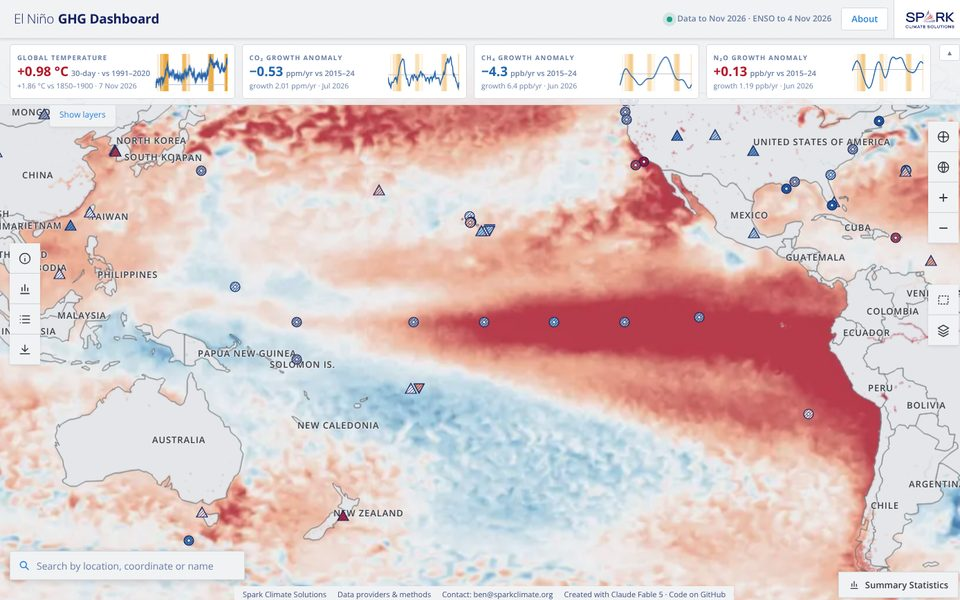
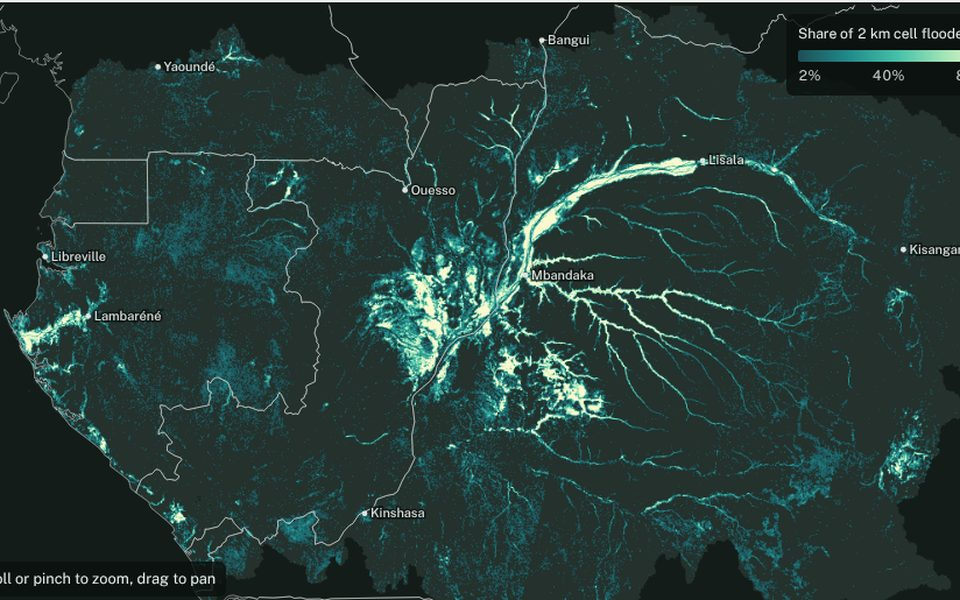
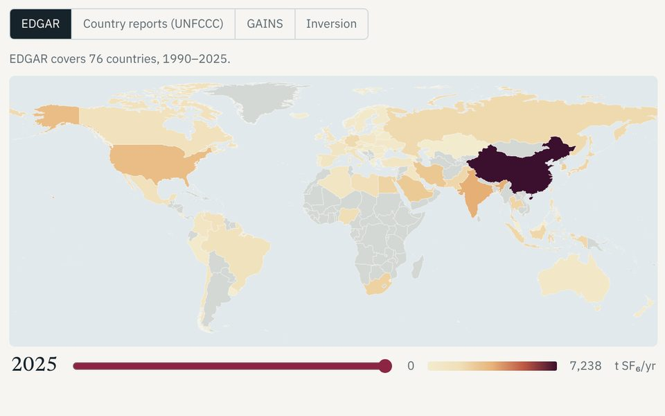

-

El Niño GHG Dashboard
Follow how El Niño shows up in the climate system: sea-surface temperatures, satellite layers and greenhouse-gas measurements from stations and flux towers, alongside current growth anomalies for CO₂, methane and nitrous oxide.
Open the dashboard -

Flooded-forest explorer, 2015–2025
Eleven years of ALOS-2 radar maps showing where forest stood in water across the Congo Basin and northern South America. Zoom in to stream the original 100 m maps, or pick a spot or region to see its flood history.
Open the explorer -

SF₆: a small emission with a large warming effect
Where sulfur hexafluoride comes from, how fast it is building up in the atmosphere, and how four different estimates of its emissions compare, country by country.
Read the explainer